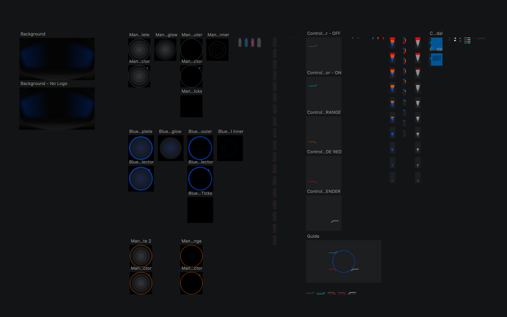
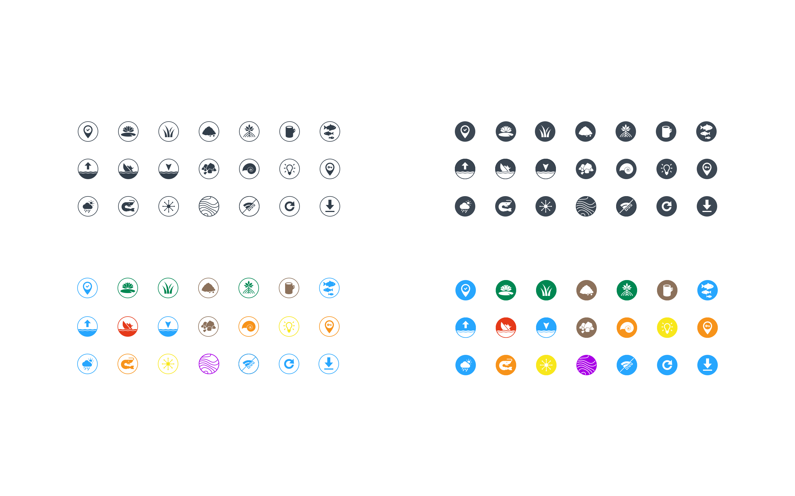
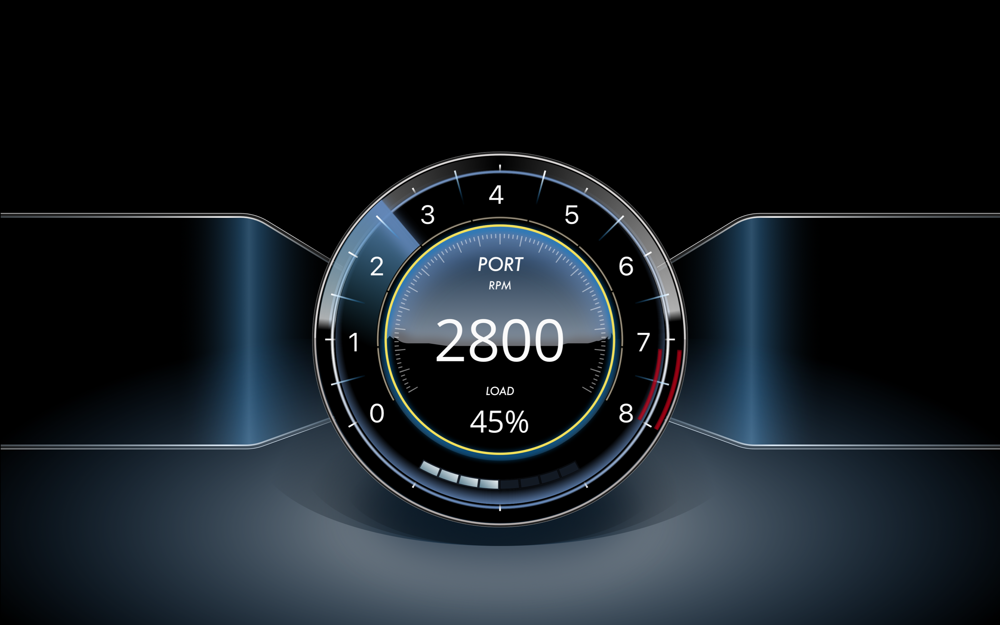

FLIR Systems is a world-leading industrial technology company specializing in intelligent sensing solutions for defense and industrial applications. With a mission to innovate the sixth sense, FLIR needed a digital platform that would effectively communicate their technological leadership and innovation.
We collaborated with FLIR to develop a sophisticated digital experience that showcases their cutting-edge technology and solutions. The design emphasizes technical excellence while maintaining accessibility for their diverse audience of military, industrial, and commercial clients.




